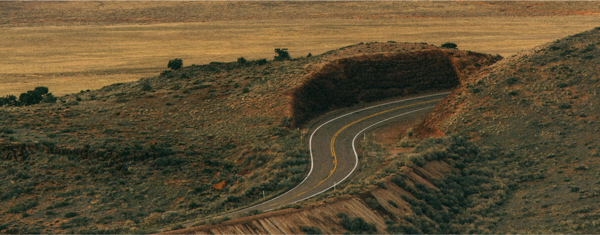
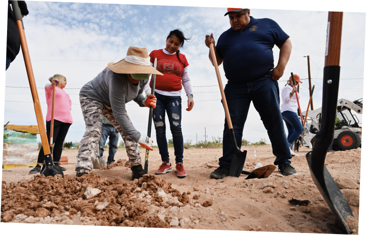
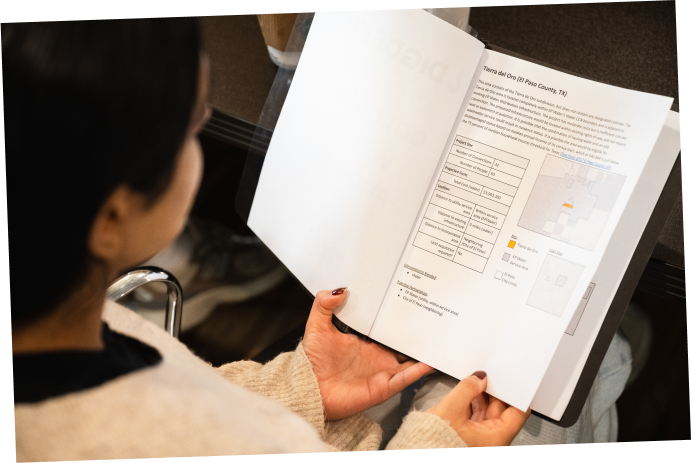
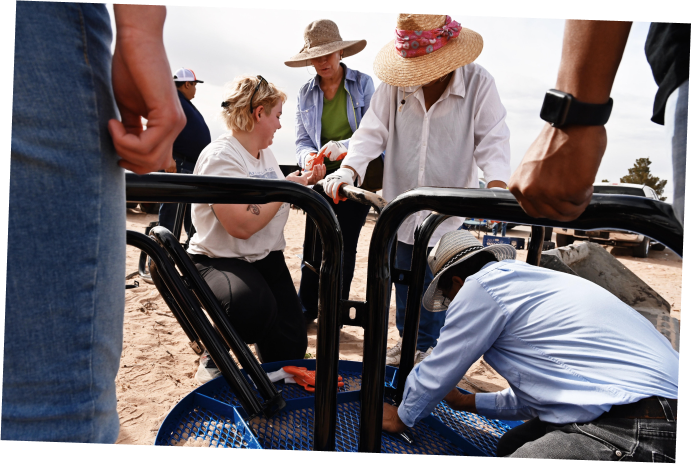
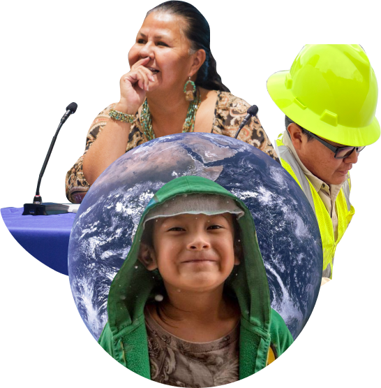
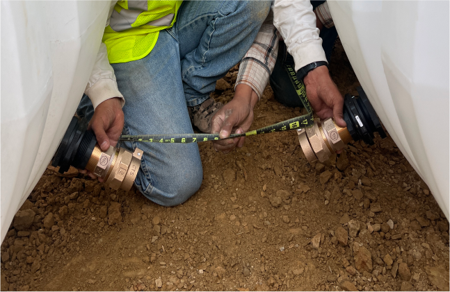
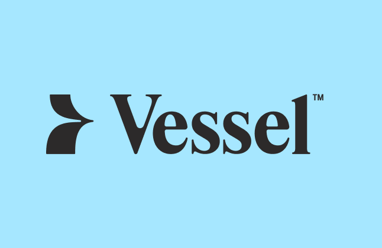

Working taps and toilets for every person in the United States.
We do this through our Impact Model:
01.
Advance community-led solutions
by deploying proven WASH* strategies to ensure that every person in America has clean, running water forever.
(aka taps & toilets for every person in the U.S.)
*WASH is an acronym that stands for "water, sanitation and hygiene". Universal, affordable and sustainable access to WASH is a key public health and equity issue and is the focus of UN Sustainable Development Goal 6.
02.
Develop an evidence base
by collecting, sharing and leveraging domestic WASH data to inform our progress toward universal access.
(aka research on the problem and the solution)
03.
Mobilize America
by empowering people to solve this problem in their lifetimes.
(aka spread the word about the U.S. water crisis)
04.
Build an ecosystem of change
by facilitating high-impact collaboration to lead a diverse, sustainable movement.
(aka enlist partners to make the work happen faster and more effectively)
Community-
LED
WATER
PROJECTS
Section 01
The Navajo
Water Project
Expanding Our Footprint & Services
Our project managers have conducted presentations at the Navajo Chapter Houses and initiated presentations in new locations, providing updates and information on our projects. The NWP project sites have also expanded their operations to encompass various activities, including homesite lease management, bill payment services, and septic cleaning facilitated by a contractor. Furthermore, two sites are actively involved in septic/leach placement and bathroom upgrades.
PLUMBING LAB GRADUATES!
We're thrilled to announce the graduation of the inaugural group of plumbing students from Navajo Tribal University in December 2023. This marks a significant achievement and a pivotal moment as the first cohort completes their studies.

COLLABORATION WITH NAVAJO AGENCIES
Our project managers have conducted presentations at the Navajo Chapter Houses and initiated presentations in new locations, providing updates and information on our projects. The NWP project sites have also expanded their operations to encompass various activities, including homesite lease management, bill payment services, and septic cleaning facilitated by a contractor. Furthermore, two sites are actively involved in septic/leach placement and bathroom upgrades.
PILOT PROJECT:
SEPTIC
This year we have begun installing septic tanks! We perform soil testing with a certified soil tester, which is crucial when placing septic/leach lines. IAPMO and DigDeep completed two test sites by placing pressurized septic systems, with the Indian Health Service and Navajo Nation EPA on-site as well.
The Appalachia
Water Project
PIPED WATER CONNECTIONS
Two piped water expansion projects were undertaken in partnership with the local water utility, with over 40 families receiving first time water access. In addition to these projects, we connected an additional 30 families who were able to receive first time clean water access through one-off support.
CENTRALIZED
SEWER PROJECTS
We completed two centralized sewer projects bringing first time wastewater treatment services to over 90 families who were previously straight piping. This expands our work beyond piped water access to working toilets!
PILOT PROJECT: HOME RAINWATER SYSTEM
In a very exciting collaboration with NWP, we designed and installed the first pilot of a Home RainWater System based on the Navajo Water Project’s Home Water System! This pilot system will be monitored closely over the next few seasons, and then we plan to install many more in 2024 and beyond.
PILOT PROJECT:
SEPTIC
The team completed its first 5 installations of onsite wastewater treatments systems (septic systems), preparing the way for another 30 in 2024. This was a big learning effort both technically–with this being our biggest step to providing off-grid wastewater services–and in terms of federal grant management. This is our first federally-funded project.
The Colonias
Water Project
SUPPORTING SANDBRANCH

Sandbranch is an unincorporated community just 20 miles from downtown Dallas. There’s approximately 100 residents in the community where for decades residents have lacked access to basic infrastructure like water, sewage systems, trash services, streetlights and emergency services. DigDeep’s Colonias Water Project team has been working to address urgent needs via bottled water donations, sanitation services and fan donation, while water hauling and long-term water infrastructure solutions are under exploration. We’re also developing solutions in partnership with community leaders and local residents via ongoing community meetings and one-on-one discussion and building partnerships with other nonprofits and organizations to create a centralized support network and sustainable, long-term solutions.
PLANNING &
DESIGN
We completed our baseline surveys in new expansion colonias: Hillcrest, Tierra de Oro, Laura E. Mundy, Serene Acres, Turf and Sandbranch. These surveys are an entry point into the communities to begin developing relationships and building trust among residents while also giving us information about WASH practices and usages before our project begins.

RELATIONSHIP BUILDING
We've deepend our relationships with key organizations in the region including; UTA, AYUDA, Communities Unlimited, Wayside Baptist Church, University of Texas El Paso, Lower Valley Water District, El Paso Water, WFX, Rio Cog, Horizon MUD, and Southern Sector Rising.
PILOT PROJECT:
SEPTIC
We developed a project in partnership with AYUDA to assess the wastewater systems in 100 homes, and to bring them into full access either through a new septic tank installation where none exist or cleaning and emptying in order to bring ones back into working order. Where our previous work focused on water access, this is an important first step into supporting wastewater access as well.

Founders
THE
WATER
ACCESS
GAP
Section 02
DIGDEEP

Labs
Developing a hub of research, innovation, and impact measurement to ensure a strong evidence base for the organization and the broader WASH sector.
Impact Measurement
In 2023, we built out a dedicated impact measurement team and transitioned to mWater - a secure data platform developed specifically for WASH projects like ours! Because the data is all in one place, our field teams can seamlessly use mWater for conducting surveys, reviewing submitted data, and making in-the-field decisions. 40+ staff have been trained over 7 training trips and over 4500 surveys have been entered into mWater.

Water Access Innovation Cohort
The Water Access Innovation Cohort was an 18-month program that brought local organizations together to tackle the challenges faced by communities across the U.S. that lack centralized access to clean, running water. The cohort aimed to gain a deeper understanding of these issues across the country, identify innovative solutions, and advocate for policy changes that can enhance the effectiveness, sustainability, and reach of these solutions. The program concluded with a federal roundtable in Washington D.C., where cohort members had the chance to share their key findings and policy recommendations with leaders from the USEPA and USDA. These recommendations focused on ways the government can support and scale up the most promising solutions to improve water access for all.
Water Innovation Funds
We established a clear purpose, strategy, and process around both the Water Is Life Fund and the Water Inspiration Fund in order to ensure equity, streamline management, and allow for tracking the impact of this work. In 2023, the Water is Life Fund supported thirteen community-led projects to increase access to clean water and sanitation and the Water Inspiration Fund made strategic investments to support two projects that will provide transformational change to their respective communities.
DIGDEEP
Labs
Fostering high impact collaboration and collective action between WASH organizations working in the United States.
Launch of
Vessel TM
In the fall, we formally launched the Vessel collective with international leader Water for People. Vessel™ is the first step in building a formal, robust and dedicated U.S. WASH sector: a network of over a dozen nonprofits, funders, academics, government agencies and other community champions to share knowledge, strategic coordination and engage in more effective policy making to Close the U.S. Water Gap for good.

Expanded Sector Partnerships
2023 was a hallmark year for demonstrating DigDeep's leadership in the U.S. WASH space. In addition to Vessel's launch, we met with dozens of organizations to expand awareness of the water access gap, including participation in coalitions with PolicyLink, additional co-leadership on events with the U.S. Chamber of Commerce, meetings and partnership discussion with the Navajo Nation Washington Office, American Water Works Association, Community Engineering Corps, GreenLatinos, Xylem, the American Business Water Coalition, Millennium Water Alliance, and many more organizations.
Briefing the
White House
In January 2023, we presented our Draining report to members of the White House Council on Native American Affairs. This briefing led to stronger coordination efforts between DigDeep and EPA, Interior, and other offices. In the fall, the Biden Administration made a major commitment to support the 2+ million folks without water & wastewater nationwide - for the first time on an international stage and on new access specifically.
Senate Hearings
In 2023, thanks in part to advocacy efforts by DigDeep, the U.S. Senate held four hearings around water access. We provided statements for the record, drafted questions, submitted talking points and research, and directly advised several Senate offices throughout the process. Each hearing had a different focus across three subcommittees; focusing on water access and climate change, crumbling infrastructure, funding access, and more. Senator Lujan submitted one of DigDeep's statements on the floor of the Senate. We aided the Committee on Environment and Public Works (EPW) on development of a fourth Senate hearing on funding gaps for disadvantaged and rural communities.
Mobilize
America
COLONIAS WATER PROJECT LAUNCH
We executed the public launch of the Colonias Water Project after work to bring clean, running water to the Cochran colonia was completed. This allowed us to tell a story arc of providing an entire colonia (community) water access from start-to-finish. The triumphant story of a 30-year fight for water access in Cochran received several notable press features on the project, including coverage from CBS News and ABC Nightline News.
H2O IN THE NEWS
IN THE PRESS IN THE PRESS IN THE PRESS IN THE PRESS IN THE PRESS IN THE PRESS IN THE PRESS IN THE PRESS
IN THE PRESS IN THE PRESS IN THE PRESS IN THE PRESS IN THE PRESS IN THE PRESS IN THE PRESS IN THE PRESS